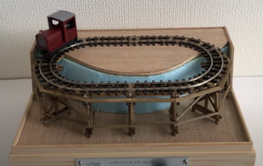
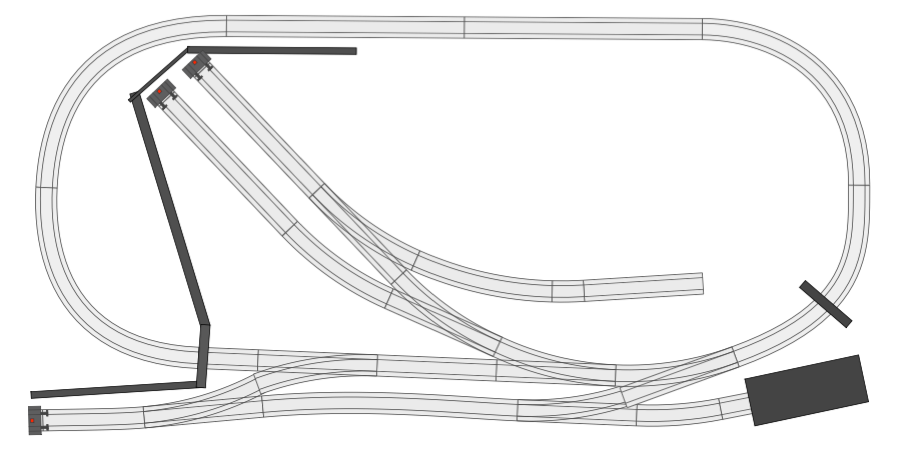

One of the main issues in model railroad is space. In particular for H0 or OO gauges, where a simple oval layout with a few points and shunting branches can easily take up to 2x1 meters.  Over the last pandemic winter I was looking at micro layouts on Pinterest and I noticed somethin quite interesting: some guys from Japan were able to run HOe locomotives on embrassingly small radius curves (see image on the right, click it for the video).
So I thought: what if something similar could be possible with standard H0 scale? ..and it turns out, it does.
The folloowing layout measures 1.2 x 0.6 meters, and can be easliy stored under a bed or above a wardrobe. The curvers are of about 25 cm in radius, obtained using flexible tracks and far below the theoretical H0 minimum radius R1 of about 36 cm. For this reason it allows to run two axes rolling stock only, but for me it was more than fine.

The option to build a small layout with the option to actually run trains besides shunting operations was very interesting to me. With respect to the H0 scale I am indeed more interested in shunting operations rather than seeing long trains running, which I think would always look weird in apartment-sized layouts, even if of 2x1 meters or larger. A small shunting layout is, instead, both a bit more realistic and fun to operate, at least IMHO. And with the option to make trains actually run it became exactly what I was looking for.
{kind=link}